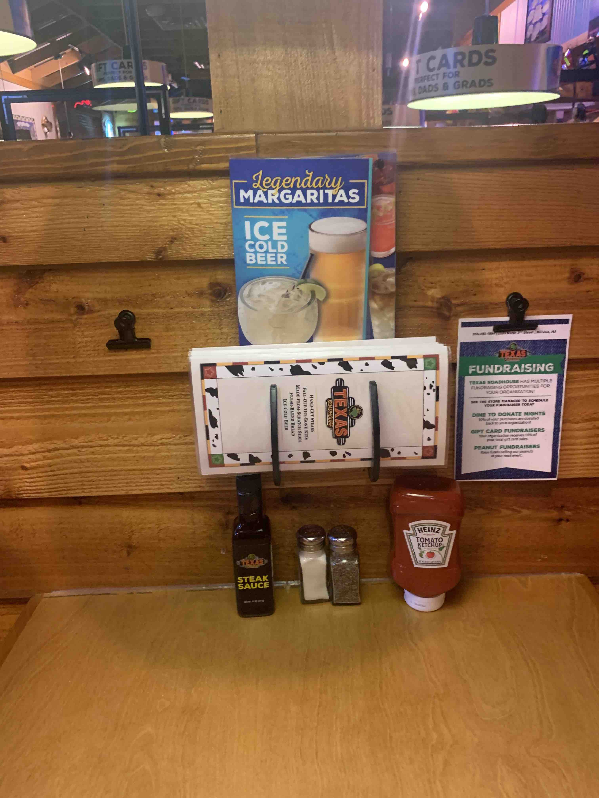

Get yourself a clean towel and sanitizer spray. (ask a manager if you cannot find a clean towel)
Make sure your tables are bussed and bar glasses are given to the bartender.
If there is A1, tabasco, or extra sauces at the table, make sure you bring them to condiments
If condiments has already completed the backwork (indicated with a sign) you must clean them yourself and return them.
Spray down your table and wipe it thoroughly to ensure cleanliness.
Wipe down your menus (open them up and get rid of those finger prints!)
Return the menus to their holder, with the drink menu in the back vertically and the food menus horizontal (like pictured)
Clean your Ketchup and Steak Sauce (outside and in the caps)
Fill your salt and pepper shakers.
Salt is in the dry storage (DO NOT use "kosher" salt).
Pepper can be found on the back line in a big jug over the label maker.
Wipe down your dividers using Windex and paper towels (You may have to search around for Windex, just ask if you need help finding some)
There are ledges on the divider and around your booth that can collect dust, so make sure you are wiping those surfaces.
Add plates to your tables like depicted.
The table top should look like this when you are finished:

Typically checkers expect the salt and ketchup to be on the right, and the pepper and steak sauce to be on the left. (This person didn't do that, but its clean!)
Now you should wipe down your booth seats (Its a good idea to get in those cracks between the seat and the walls!)
Find yourself a broom and a dust pan and begin sweeping your section.
You need to sweep under the table, under the booths, and in front of the table.
You are responsible for whatever space is infront of your table. Lets say you have table 215, you need to sweep to the bar wall!
You cannot sweep near guests! If you find yourself waiting a long time, ask your checker if they would mind helping you out.
Each server is expected to roll 20 silverware and sort:
Clean sorted silverware goes into holders like so:
Grab some linens and open them flat.
Take the top linen and fold it in half (corner to corner, like a triangle now)
Place down 1 knife and 2 forks stacked in the middle, over the fold crease.
Fold the left and right corners in, over the silverware
Now roll up the silverware using both hands.
Here is an example of how your silverware should look from a bin:
Show your front checker the silverware and place it in the metal bin behind table 412.
When you are done everything you will ask your front checker to check you, once you make any corrections needed you'll get a signature on your checkout slip.